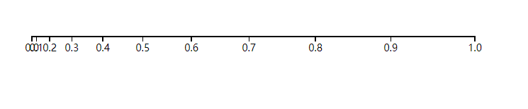
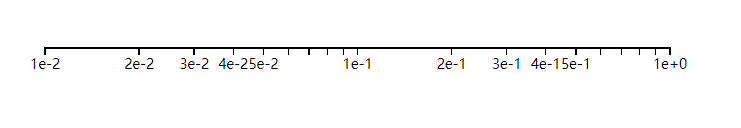

1 var width = 600;
2 var height = 600;
3 var svg = d3.select("#body")
4 .append("svg")
5 .attr("width",width)
6 .attr("height",height)
7
8 // 用于坐标轴的线性比例尺
9 var xScale = d3.scale.linear()
10 .domain([0,10])
11 .range([0,300])
12
13
14 // 定义坐标轴
15 var axisBottom = d3.svg.axis()
16 .scale(xScale) //使用上面定义的比例尺
17 .orient("bottom") //刻度方向向下
18
19
20 //在svg中添加一个包含坐标轴各元素的g元素
21 var gAxis = svg.append("g")
22 .attr("transform","translate(80,80)") //平移到(80,80)
23 .attr("class","axis") 24
25 //在gAxis中绘制坐标轴
26 axisBottom(gAxis)
1 .axis path{
2 fill:none;
3 stroke : black;
4 shape-rendering:crispEdges;
5 }
6 .axis line{
7 fill:none;
8 stroke : black;
9 shape-rendering:crispEdges;
10 }
11 .axis text{
12 font-family: sans-serif;
13 font-size: 11px;
14 }
1 var width = 600;
2 var height = 600;
3 var svg = d3.select("#body")
4 .append("svg")
5 .attr("width",width)
6 .attr("height",height)
7 //用于坐标轴的线性比例尺
8
9 var xScale = d3.scale.linear()
10 .domain([0,10])
11 .range([0,300])
12
13
14 //定义坐标轴
15 var axisLeft = d3.svg.axis()
16 .scale(xScale)
17 .orient("left") //刻度方向向左
18 .ticks(5)
19
20
21 //在svg中添加一个包含坐标轴各元素的g元素
22 var gAxis = svg.append("g")
23 .attr("transform","translate(80,80)") //平移到(80,80)
24 .attr("class","axis")
25 //在gAxis中绘制坐标轴
26 axisLeft(gAxis)
1 var width = 600;
2 var height = 600;
3 var svg = d3.select("#body")
4 .append("svg")
5 .attr("width",width)
6 .attr("height",height)
7 //用于坐标轴的线性比例尺
8
9 var xScale = d3.scale.linear()
10 .domain([0,10])
11 .range([0,300])
12
13
14 //定义坐标轴
15 var axisRight = d3.svg.axis()
16 .scale(xScale)
17 .orient("right") //刻度方向向右
18 .tickValues([3,4,5,6,7])
19
20
21
22 //在svg中添加一个包含坐标轴各元素的g元素
23 var gAxis = svg.append("g")
24 .attr("transform","translate(80,80)") //平移到(80,80)
25 .attr("class","axis")
26 //在gAxis中绘制坐标轴
27 axisRight(gAxis)
1 var width = 600;
2 var height = 600;
3 var svg = d3.select("#body")
4 .append("svg")
5 .attr("width",width)
6 .attr("height",height)
7 //用于坐标轴的线性比例尺
8
9 var xScale = d3.scale.linear()
10 .domain([0,10])
11 .range([0,300])
12
13 //定义坐标轴
14 var axiosTop = d3.svg.axis()
15 .scale(xScale)
16 .orient("top") //刻度方向向上
17 .ticks(5)
18 .tickSize(2,4)
19 .tickFormat(d3.format("$0.1f"))20
21
22 //在svg中添加一个包含坐标轴各元素的g元素
23 var gAxis = svg.append("g")
24 .attr("transform","translate(80,80)") //平移到(80,80)
25 .attr("class","axis")
26 //在gAxis中绘制坐标轴
27 axiosTop(gAxis)
28
1 var width = 600;
2 var height = 600;
3 var svg = d3.select("#body")
4 .append("svg")
5 .attr("width",width)
6 .attr("height",height)
7
8 //用于坐标轴的比例尺
9
10 // 线性比例尺
11 var xScaleLine = d3.scale.linear()
12 .domain([0,1])
13 .range([0,500])
14
15 //定义坐标轴
16
17 var axisBottomLine = d3.svg.axis()
18 .scale(xScaleLine) //使用上面定义的比例尺
19 .orient("bottom") //刻度方向向下
20
21
22 //在svg中添加一个包含坐标轴各元素的g元素
23 var gAxis = svg.append("g")
24 .attr("transform","translate(80,80)") //平移到(80,80)
25 .attr("class","axis")
26
27 //在gAxis中绘制坐标轴
28 axisBottomLine(gAxis)
1 var width = 600;
2 var height = 600;
3 var svg = d3.select("#body")
4 .append("svg")
5 .attr("width",width)
6 .attr("height",height)
7
8 //用于坐标轴的比例尺
9
10 // 指数比例尺
11 var xScalePow = d3.scale.pow()
12 .exponent(2)
13 .domain([0,1])
14 .range([0,500])
15
16
17 //定义坐标轴
18
19 var axisBottompPow = d3.svg.axis()
20 .scale(xScalePow) //使用上面定义的比例尺
21 .orient("bottom") //刻度方向向下
22
23
24 //在svg中添加一个包含坐标轴各元素的g元素
25 var gAxis = svg.append("g")
26 .attr("transform","translate(80,80)") //平移到(80,80)
27 .attr("class","axis")
28
29 //在gAxis中绘制坐标轴
30 axisBottompPow(gAxis)
效果图:

三 、 对数比例尺的坐标轴:
代码 :
1 var width = 600;
2 var height = 600;
3 var svg = d3.select("#body")
4 .append("svg")
5 .attr("width",width)
6 .attr("height",height)
7
8 //用于坐标轴的比例尺
9
10 var xScaleLog = d3.scale.log()
11 .domain([0.01,1])
12 .range([0,500])
13
14
15 //定义坐标轴
16 var axisBottomLog = d3.svg.axis()
17 .scale(xScaleLog) //使用上面定义的比例尺
18 .orient("bottom") //刻度方向向下
19
20 //在svg中添加一个包含坐标轴各元素的g元素
21 var gAxis = svg.append("g")
22 .attr("transform","translate(80,80)") //平移到(80,80)
23 .attr("class","axis")
24
25 //在gAxis中绘制坐标轴
26 axisBottomLog(gAxis)
效果图:

其他比例尺下的坐标轴大家可以自己去试一下。
下一章给大家做一个带比例尺、坐标轴的柱形图。